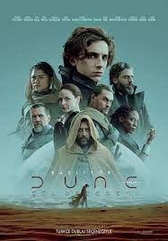

Merhaba, ben Gizem İZMİR! İzmir'de yaşıyorum. Bilimkurgu filmleri izlemeyi ve kitap okumayı seviyorum. En sevdiğim bilimkurgu filmi Dune. Patika.dev eğitimleri sayesinde hem eğleniyorum hem kendimi geliştiriyorum. Teşekkürler Patika!
Dune:
Dune: Denis Villeneuve'nin yönetmenliğini yaptığı bir bilimkurgu filmidir."Dune", ailesi çöl gezegeni Arrakis’in kontrolüne sahip olan Paul Atreides’in hikayesini anlatmaktadır.